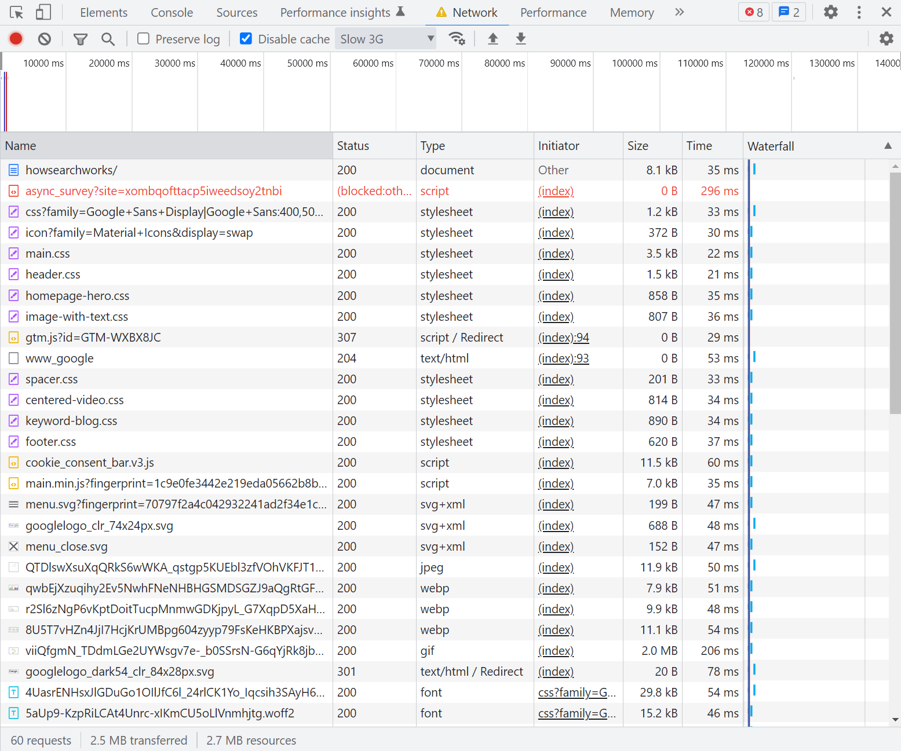

<!-- undraw.co with color #B9DA8B -->
<style>
    /* need this for print to PDF */
    /* div.slides { background-color: #fff !important; } */
</style>

<section>
    
    <h3 style='margin-top: 1em; font-size: 1.1em;'>Everything you always wanted to know about the Internet, but were afraid to ask.</h3>

    <p><a href='http://jordankasper.com/internet'>jordankasper.com/internet</a></p>
</section>

<section>
    <h2>Where do you want to go?</h2>

    <p class='fragment'>
        <br />
        <abbr class='expand' title='Uniform Resource Locator'>URL</abbr><br />
        <span class='fine'>(Human readable addressing)</span>
    </p>
</section>

<section>
    <h2>Where do you want to go?</h2>

    <p>
        
    </p>
    <p class='fragment'>
        But we really want to go to <strong>36.16085, -86.773903</strong>...
    </p>
    <p class='fragment'>
        by car...
    </p>
    <p class='fragment'>
        and to the second floor...
    </p>
    <p class='fragment'>
        room 202.
    </p>
</section>

<section>
    <h2>How should we communicate?</h2>

    <p>
        <br />
        <p>HyperText Transfer Protocol - Secure</p>
    </p>

    <p class='fragment'>
        
    </p>

    <p class='fragment' style='font-size: 0.9em;'>
        Other protocols you might know...<br><br>
        <abbr title='File Transfer Protocol'>FTP</abbr>,
        <abbr title='Post Office Protocol'>POP</abbr>,
        <abbr title='Simple Mail Transfer Protocol'>SMTP</abbr>,
        <abbr title='Secure Socket Layers'>SSL</abbr>,
        <abbr title='Dynamic Host Configuration Protocol'>DHCP</abbr>,
        <abbr title='Transmission Control Protocol'>TCP</abbr>,
        <abbr title='User Datagram Protocol'>SSH</abbr>
    </p>
</section>

<section id='domains'>
    <h2>Catchy Title</h2>

    <p>
        <br />
    </p>
</section>

<section id='domain-pieces'>
    <h2>Catchy Title</h2>

    <p>
        <br />
        subdomain.<abbr title='Second Level Domain'>SLD</abbr>.<abbr title='Top Level Domain'>TLD</abbr>
    </p>

    <p class='fragment' style='margin-top:1em;'>
        <span class='fine'>Common <abbr title='Top Level Domain'>TLD</abbr>'s:</span> <strong>.com, .org, .gov</strong><br />
        <span class='fine'>Examples of <abbr title='Second Level Domain'>SLD</abbr>'s:</span> <strong>google, whitehouse, facebook</strong><br />
        <span class='fine'>Typical subdomains:</span> <strong><abbr title='world wide web'>www</abbr>, mail, blog</strong>
    </p>
</section>

<section id='url-path'>
    <h2>Follow the Path</h2>

    <p>
        <br />
    </p>

    <p class='fragment' style='margin-top:1em;'>
        This is <strong>not</strong> a real directory structure!
    </p>
</section>

<section id='ports'>
    <h2>Any port in a storm...</h2>

    <p>
        
    </p>

    <p class='fragment' style='margin-top:1em;'>
        <br />
        <cite class='image'>http://www.beggsandpartners.com/plumbing-heating/overview/</cite>
    </p>
</section>

<section id='the-simple-cloud' data-background='#f5f5ff' data-transition='none'>
    <h2>Into the cloud</h2>

    <p>
        
    </p>
</section>

<section id='expanding-cloud-1' data-background='#f5f5ff' data-transition='none'>
    <h2>Into the cloud</h2>

    <p>
        
    </p>
</section>

<section id='expanding-cloud-2' data-background='#f5f5ff' data-transition='none'>
    <h2>Into the cloud</h2>

    <p>
        
    </p>
</section>

<section id='expanding-cloud-3' data-background='#f5f5ff' data-transition='none'>
    <h2>Into the cloud</h2>

    <p>
        
    </p>
</section>

<section id='expanding-cloud-4' data-background='#f5f5ff' data-transition='none'>
    <h2>Into the cloud</h2>

    <p>
        
    </p>
</section>

<section id='internet-cloud' data-background='#f5f5ff' data-transition='none'>
    <h2>Into the cloud</h2>

    <p>
        
    </p>
</section>

<section data-background='#f5f5ff'>
    <h2>Where are we going again?</h2>

    <p>
        We just typed in:<br><br>http://www.google.com/search/howsearchworks/
    </p>

    <p class='fragment'>
        <br>But where do we really want to go?<br><br>
        
    </p>
</section>

<section id='telephone-exchange'>
    <h2>We need a translator!</h2>

    <p>
        
    </p>
</section>

<section id='dns-cache' data-background='#f5f5ff' data-transition='none'>
    <h2>Down the line...</h2>

    <p>
        The first machine to know the answer wins!<br />
        
    </p>

    <aside class='notes'>
        <p>
            How would your computer already know the Ip address for "google.com"?
            Through it's DNS cache. It holds onto a number of addresses just in
            case you use them again soon.
        </p>
    </aside>
</section>

<section id='dns-router' data-background='#f5f5ff' data-transition='none'>
    <h2>Down the line...</h2>

    <p>
        The first machine to know the answer wins!<br />
        
    </p>
</section>

<section id='dns-isp' data-background='#f5f5ff' data-transition='none'>
    <h2>Down the line...</h2>

    <p>
        The first machine to know the answer wins!<br />
        
    </p>
</section>

<section id='dns-entry' data-background='#f5f5ff' data-transition='none'>
    <h2>Down the line...</h2>

    <p>
        The first machine to know the answer wins!<br />
        
    </p>
</section>

<section id='dns-cluster' data-background='#f5f5ff' data-transition='none'>
    <h2>Down the line...</h2>

    <p>
        The first machine to know the answer wins!<br />
        
    </p>
</section>

<section id='dns-answer' data-background='#f5f5ff' data-transition='none'>
    <h2>Down the line...</h2>

    <p>
        The first machine to know the answer wins!<br />
        
    </p>

    <aside class='notes'>
        <p>
            So what if none of those machines knows the answer? Then you get an
            error page. Trying going to
            <a href='http://hfirnhocuwgkfhgt.com'>http://hfirnhocuwgkfhgt.com</a>
        </p>
    </aside>
</section>

<section id='ip-addresses'>
    <h2>So many numbers</h2>

    <p>
        Now we know where to go to get content from Google:<br><br><strong>74.125.227.36</strong><br><br>
        But what is that number?
    </p>

    <p class='fragment' style='margin-top:1em;'>
        It's an <abbr class='expand' title='Internet Protocol'>IP</abbr> - address.<br><br>
        A machine-readable identifier for a network interface<br>(not for the whole machine!)
    </p>

</section>

<section id='ip-address-versions'>
    <h2>IPv4</h2>
    <div class='fragment'>
        <p>
            Set of four numbers,<br>between <strong>0 and 255</strong>
        </p>
        <p class='fine' style='font-size:0.8em;'>
            (that's 8 bits each, making a 32-bit address)
        </p>

        <table style='width:100%; margin-top:1em; font-size:0.75em;' class='fragment'>
            <tr>
                <td style='text-align:right; padding:0 0.5em; width:50%;'>74.</td>
                <td style='text-align:left; padding:0 0.5em;'>125.227.26</td>
            </tr>
            <tr>
                <td style='text-align:right; padding:0 0.5em;'>Network ID (1-126, Class A)</td>
                <td style='text-align:left; padding:0 0.5em;'>Host (interface) ID</td>
            </tr>
        </table>
    </div>
</section>

<section>
    <p>Your computer at home has an IP address, too!</p>
    <p>But why does it always start with 192?</p>

    <p class='fragment'>
        It's a <strong>private</strong> network,<br>
        and every device you have has a private IP!
    </p>
</section>

<section id='dhcp-or-static' data-background='#f5f5ff' data-transition='none'>
    <h2>Home Networks</h2>

    <div class='home-net-other'>
        
    </div>
</section>

<section id='static-ip' data-background='#f5f5ff' data-transition='none'>
    <h2>Static IP</h2>

    <div class='home-net-other'>
        
    </div>
</section>

<section id='dhcp-request' data-background='#f5f5ff' data-transition='none'>
    <h2>Dynamic Host Control Protocol</h2>

    <div class='home-net-other'>
        
    </div>
</section>

<section id='dhcp-response' data-background='#f5f5ff' data-transition='none'>
    <h2>Dynamic Host Control Protocol</h2>

    <div class='home-net-other'>
        
    </div>
</section>

<section id='ipv4-vs-ipv6'>
    <h2 style='text-transform: none;'>IPv4 vs IPv6</h2>

    <p>
        Why the need for a new version of IP addressing?
    </p>
    <p>
        Seems to work just fine...
    </p>

    <div class='fragment' style='font-size:0.7em'>
        <div style='width:43%; float: left;'>
            <h4>IPv4</h4>
            <ul>
                <li>format: 192.168.1.67</li>
                <li>32-bit addressing (4 x 8 bits)</li>
                <li>2^32 possible IPs = <br>4,294,967,296 (~4.3 billion)</li>
            </ul>
        </div>

        <div style='width:56%; float: left;'>
            <h4>IPv6</h4>
            <ul>
                <li>format: 2001:db8:85a3:42:0:8a2e:370:7334</li>
                <li>128-bit addressing (8 x 16 bits)</li>
                <li>2^128 possible IPs =<br>340,282,366,920,938,463,463,374,607,431,768,211,456</li>
            </ul>
        </div>
    </div>

    <p class='fragment' style='clear:both; padding-top:1em;'>We started running out of IPv4 addresses in 2011.</p>

    <aside class='notes'>
        <p>
            When we say we started "running out" of addresses, what we mean is
            that large blocks of addresses had been allocated to specific
            companies, governments, educational institutions, etc, and while
            they may still have unassigned addresses, no more large blocks
            are available.
        </p>
    </aside>
</section>

<section id='ipv6-visualization'>
    <h2>Visualizing IPv6</h2>

    <p>
        Imagine a monitor with 105px per inch,<br>
        and 1px per IP address...
    </p>

    <aside style='display: flex;'>
        <aside class='fragment' style='width: 49%'>
            <h3>IPv4</h3>
            
        </aside>
        <aside class='fragment' style='width: 49%'>
            <h3>IPv6</h3>
            
        </aside>
    </aside>
    
    <p class='fine' style='font-size:0.8em;'>http://pthree.org/2009/03/08/the-sheer-size-of-ipv6/</p>
</section>

<section id='cloud-recap' data-background='#f5f5ff' data-transition='none'>
    <h2>Let's see that again...</h2>

    <p>
        
    </p>
</section>

<section id='request-anatomy'>
    <h2>Anatomy 101</h2>

    <h3>The HTTP REQUEST</h3>

    <pre class='fragment'><code class='lang-no-highlight'>GET /search/howsearchworks/ HTTP/1.1
    Host: www.google.com
    Accept: text/html,application/xhtml+xml,application/xml;q=0.9,*/*;q=0.8
    Connection: keep-alive
    Cookie: 1%2FcA8CoqFFr9udmhMd2NpbtBcfH9Rzdd9fE5ISkdmB%2F...
    User-Agent: Mozilla/5.0 (Windows NT 10.0; Win64; x64) AppleWebKit/537.36 ...
    ...</code></pre>

    <aside class='notes'>
        <p>
            There is usually a LOT more in a REQUEST, this is just a sample of
            some potential data.
        </p>
    </aside>
</section>

<section id='http-methods'>
    <h2>The Method</h2>

    <pre><code class='lang-no-highlight'>GET /search/howsearchworks/ HTTP/1.1</code></pre>

    <div class='fragment' style='margin-top:2em; text-align:left;'>
        <ul>
            <li><strong>GET</strong> - Data Retrieval</li>
            <li><strong>POST</strong> - Data Creation</li>
            <li><strong>PUT</strong> - Data Updates</li>
            <li><strong>DELETE</strong> - Data Deletion</li>
        </ul>
        <div class='fragment' style='font-size:0.8em;'>
            <h3 style='margin-top:2em;'>Less often used...</h3>
            <ul style='margin-top:1em;'>
                <li><strong>OPTIONS</strong> - Tells the client what methods are supported (and sometimes how to use them)</li>
                <li><strong>PATCH</strong> - Update part of a record with the given data (if implemented, then PUT usually replaces the <em>entire record</em>)</li>
                <li><strong>HEAD</strong> - basically a GET, but only retrieves http headers, not the full response</li>
            </ul>
        </div>
    </div>
</section>

<section id='request-cookies'>
    <h2>Anatomy 101</h2>

    <h3>What's a cookie?</h3>

    <pre><code class='lang-no-highlight'>Cookie: 1%2FcA8CoqFFr9udmhMd2NpbtBcfH9Rzdd9fE5ISkdmB%2F2023-05-09+15%3A21%3A59</code></pre>

    <pre class='fragment'><code class='lang-no-highlight'>Cookie: 1/cA8CoqFFr9udmhMd2NpbtBcfH9Rzdd9fE5ISkdmB/2023-05-09 15:21:59</code></pre>

    <ul>
        <li class='fragment'>Typically URL or base64 encoded (not required)</li>
        <li class='fragment'>Stored on local user's machine</li>
        <li class='fragment'>Sent with <strong>every</strong> request to the scoped host/domain</li>
    </ul>
</section>

<section id='server-architecture'>
    <h2>Typical Web Application</h2>

    <p>
        
    </p>
</section>

<section id='response-anatomy'>
    <h2>Anatomy 102</h2>

    <h3>The HTTP RESPONSE</h3>

    <pre class='fragment'><code class='lang-no-highlight'>HTTP/1.1 200 OK
    Date: Mon, 28 Mar 2016 09:15:00 GMT
    Server: Apache/1.3.3.7 (Unix) (Red-Hat/Linux)
    Last-Modified: Mon, 08 Jan 2016 23:11:55 GMT
    Cache-Control: no-cache, no-store, max-age=0, must-revalidate
    Content-Type: text/html; charset=UTF-8
    Content-Length: 220
    Expires: Fri, 01 Jan 2020 00:00:00 GMT
    X-Search-Version: 245.136

    &lt;!DOCTYPE html>&lt;html>&lt;head>...&lt;/head>&lt;body>...&lt;/body>&lt;/html></code></pre>

    <aside class='notes'>
        <p>
            As with the REQUEST data, there can - and usually is - much more
            data in the RESPONSE, this is just a brief sampling.
        </p>
    </aside>
</section>

<section id='status-codes'>
    <h2>Status Codes</h2>

    <pre><code class='lang-no-highlight'>HTTP/1.1 200 OK</code></pre>

    <ul>
        <li class='fragment'>100-199 - Informational <span class='fine'>(very rarely used)</span></li>
        <li class='fragment'>200-299 - Success <span class='fine'>(200, 201, 204)</span></li>
        <li class='fragment'>300-399 - Redirection and Cache <span class='fine'>(301, 302, 304)</span></li>
        <li class='fragment'>400-499 - Client Error <span class='fine'>(400, 401/403, 404, 405, 418)</span></li>
        <li class='fragment'>500-599 - Server Error <span class='fine'>(500, 501)</span></li>
    </ul>

</section>

<section data-background='images/all-resources.png'>
    <h2 style='text-shadow: 3px 3px 3px; font-weight: bold;'>More than just the HTML</h2>

    <!--  -->
</section>

<section id='browser-rendering'>
    <h2>Rendering & Code Execution</h2>

    <p><code>&lt;!DOCTYPE html>&lt;html>&lt;head>...&lt;/head>&lt;body>...&lt;/body>&lt;/html></code></p>

    <ol>
        <li>Setup processing based on <code>DOCTYPE</code></li>
        <li class='fragment'>Start processing the <code>&lt;head></code> element</li>
        <li class='fragment'>Process <code>&lt;meta></code> tags (in order)</li>
        <li class='fragment'>Download resources from <code>&lt;link></code> & <code>&lt;script></code> tags</li>
        <li class='fragment'>Execute JavaScript when found (unless <code>defer</code>ed)</li>
        <li class='fragment'>Start rendering the DOM tree from the <code>&lt;body></code> element</li>
        <li class='fragment'>Download resources in <code>&lt;body></code> (<code>&lt;img></code>, <code>&lt;script></code>, <code>&lt;video></code>, etc)</li>
        <li class='fragment'>Render Cascading Style Sheets, from <code>&lt;head></code> to <code>&lt;body></code></li>
    </ol>
</section>

<section id='rendered-page'>
    <h2>Rendering You Helpless</h2>

    <p style='position:relative;'>
        
        
    </p>
</section>

<section id='ssl-handshake' data-background='#f5f5ff'>
    <h2>What about encryption?</h2>

    <p>
        <abbr class='expand' title='Secure Socket Layers'>SSL</abbr>
        (<abbr title='Transport Layer Security'>TLS</abbr>)-
        encrypt data sent to and from a client/server
    </p>

    <p class='fragment'>
        
    </p>
</section>

<section id='ssl-cert-authority'>
    <h2>Why trust that server's certificate?</h2>

    <p class='fragment' style='margin-top:1em;'>
        A Certificate Authority (CA) guarantees<br>
        the holder of the certificate is who they say they are.
    </p>
    <p class='fragment' style='margin-top:1em;'>
        <strong>They are the gatekeepers.</strong><br>
        
    </p>

    <p class='fragment' style='margin-top:1em;'>
        Examples of ROOT CA's: Verisign, Thawte, GeoTrust, etc.
    </p>
</section>

<section id='ssl-chains'>
    <p>
        Certificates from root CA's can cost <strong>over $3,000</strong>
    </p>
    <p class='fragment'>
        But I hear you can <a href='https://letsencrypt.org'>get one for free</a>...
        <br><br>
        
    </p>
</section>

<section id='ssl-chain-start' data-background='white' data-transition='none'>
    <h2>Certificate Chains</h2>
    <p class='fragment'>
        
        <cite class='image'>http://datacenteroverlords.com/2011/09/25/ssl-who-do-you-trust/</cite>
    </p>
</section>

<section id='ssl-chain-root' data-background='white' data-transition='none'>
    <h2>Certificate Chains</h2>

    <p>
        
        <cite class='image'>http://datacenteroverlords.com/2011/09/25/ssl-who-do-you-trust/</cite>
    </p>
</section>

<section id='ssl-chain-complete' data-background='white' data-transition='none'>
    <h2>Certificate Chains</h2>

    <p>
        
        <cite class='image'>http://datacenteroverlords.com/2011/09/25/ssl-who-do-you-trust/</cite>
    </p>
</section>

<section id='thanks'>
    <h2>I've told you a lot... What did I miss?</h2>

    <h3 style='font-size:3em;margin:2em;'>Q &amp; A Time!</h3>

    <p><a href='http://jordankasper.com/internet'>jordankasper.com/internet</a></p>
</section>

<section id='acronyms'>
    <h2>Acronymity</h2>

    <ul style='font-size:0.9em; width:33%; float:left;'>
        <li><abbr class='expand' title='Asynchronous Javascript And XML'>AJAX</abbr></li>
        <li><abbr class='expand' title='Common Gateway Interface'>CGI</abbr></li>
        <li><abbr class='expand' title='Command Line Interface'>CLI</abbr></li>
        <li><abbr class='expand' title='Command Run ON'>CRON</abbr></li>
        <li><abbr class='expand' title='Cascading Style Sheet'>CSS</abbr></li>
        <li><abbr class='expand' title='DataBase Management System'>DBMS</abbr></li>
        <li><abbr class='expand' title='Dynamic Host Configuration Protocol'>DHCP</abbr></li>
        <li><abbr class='expand' title='Domain Name System'>DNS</abbr></li>
        <li><abbr class='expand' title='Document Object Model'>DOM</abbr></li>
        <li><abbr class='expand' title='File Transfer Protocol'>FTP</abbr></li>
        <li><abbr class='expand' title='Hyper Text Transfer Protocol Secure'>HTTPS</abbr></li>
        <li><abbr class='expand' title='Internet Message Access Protocol'>IMAP</abbr></li>
        <li><abbr class='expand' title='Internet Protocol'>IP</abbr></li>
        <li><abbr class='expand' title='Internet Service Provider'>ISP</abbr></li>
        <li><abbr class='expand' title='Linux Apache MySQL PHP'>LAMP</abbr> (or Perl, or Python)</li>
    </ul>
    <ul style='font-size:0.9em; width:33%; float:left;'>
        <li><abbr class='expand' title='Local Area Network'>LAN</abbr></li>
        <li><abbr class='expand' title='Media Access Control'>MAC</abbr></li>
        <li><abbr class='expand' title='Network Interface Controller'>NIC</abbr></li>
        <li>Perl - (not an acronym!)</li>
        <li><abbr class='expand' title='PHP: Hypertext Preprocessor'>PHP</abbr> (yes, it's recursive)</li>
        <li><abbr class='expand' title='Post Office Protocol'>POP</abbr></li>
        <li><abbr class='expand' title='Really Simple Syndication'>RSS</abbr></li>
        <li><abbr class='expand' title='Simple Mail Transfer Protocol'>SMTP</abbr></li>
        <li><abbr class='expand' title='Secure Shell'>SSH</abbr></li>
        <li><abbr class='expand' title='Service Set Identifier'>SSID</abbr></li>
        <li><abbr class='expand' title='Secure Socket Layers'>SSL</abbr></li>
        <li><abbr class='expand' title='Structured Query Language'>SQL</abbr></li>
        <li><abbr class='expand' title='Transmission Control Protocol'>TCP</abbr></li>
    </ul>
    <ul style='font-size:0.9em; width:33%; float:left;'>
        <li><abbr class='expand' title='User Datagram Protocol'>UDP</abbr></li>
        <li><abbr class='expand' title='Uniform Resource Indicator'>URI</abbr></li>
        <li><abbr class='expand' title='Uniform Resource Locator'>URL</abbr></li>
        <li><abbr class='expand' title='Virtual Private Server'>VPS</abbr></li>
        <li><abbr class='expand' title='Windows Apache MySQL PHP'>WAMP</abbr></li>
        <li><abbr class='expand' title='Wide Area Network'>WAN</abbr></li>
        <li><abbr class='expand' title='Wired Equivalent Privacy'>WEP</abbr></li>
        <li>WiFi - No, it does not mean "Wireless Fidelity", it's just a name.</li>
        <li><abbr class='expand' title='Wifi Protected Access'>WPA</abbr></li>
        <li><abbr class='expand' title='World Wide Web'>WWW</abbr></li>
        <li><abbr class='expand' title='eXstensible HyperText Markup Language'>XHTML</abbr></li>
        <li><abbr class='expand' title='eXstensible Markup Language'>XML</abbr></li>
    </ul>
</section>
